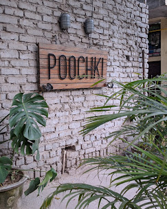
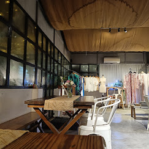

Best Cafes in Shahpur Jat (Quiet, Work-Friendly & Coffee Spots)
Looking for the best cafes in Shahpur Jat? This curated guide covers quiet cafes, work-friendly spots and top coffee places in Shahpur Jat, one of South Delhi’s most popular café hubs.
Located near Hauz Khas, Shahpur Jat has become a go-to destination for people searching for calm cafes, laptop-friendly spaces and unique coffee spots in Delhi.
The table below compares popular cafes in Shahpur Jat based on visitor ratings, atmosphere and work friendliness.
Top Cafes in Shahpur Jat – Quick Comparison (Ratings, Vibe & Work-Friendliness)
Solchemi — A Quiet Cafe to Work in Shahpur Jat ⭐ 5.0
Solchemi is widely known as a quiet cafe in Shahpur Jat where visitors can comfortably work, read or relax for longer sessions with coffee and food. Unlike many cafés that are designed primarily for quick visits, Solchemi has a slower and calmer atmosphere which makes it suitable for people who want to spend a few hours in a comfortable environment.
Freelancers, students and remote workers often choose the café because the space allows them to focus without the usual noise found in busier coffee shops. Natural lighting, relaxed seating and a welcoming environment make it a place where people frequently stay longer for work sessions, reading or thoughtful conversations.
Visitors who prefer cafés that allow longer stays often find Solchemi to be one of the most comfortable options in Shahpur Jat. The café also offers a menu of fresh food and drinks which makes it suitable for both short coffee breaks and extended work sessions.
Best for: Quiet place • Fresh food • Remote work • Art activity
Poochki Table — A Boutique Cafe in Shahpur Jat ⭐ 4.5


Why it stands out: A unique, boutique-style cafe experience with a curated and intimate vibe.
Poochki Table offers a more distinctive cafe experience compared to typical coffee spots in Shahpur Jat. The space feels thoughtfully designed and attracts visitors who enjoy exploring independent cafes with a strong identity.
The experience is more about the overall vibe, food presentation and atmosphere rather than just a quick coffee stop, making it ideal for slower visits and conversations.
Best for: Unique cafe experience • Intimate meetups • Exploring new spots
Spaced Out blends café culture with a creative workspace environment and attracts freelancers, designers and entrepreneurs who enjoy working outside traditional office spaces. The atmosphere is slightly more collaborative compared to quieter cafés, making it suitable for people who enjoy working in a creative environment.
Visitors often use the café for brainstorming sessions, informal meetings or collaborative work with colleagues. The environment encourages creativity while still providing a relaxed café setting where people can sit with laptops or discuss ideas.
Because of this balance between a café and a workspace, Spaced Out has become a popular option among people looking for a flexible place to work or meet others in Shahpur Jat.
Best for: Freelancers • Creative work sessions • Collaboration
Why it stands out: A clean, modern cafe space ideal for relaxed dining and casual meetups.
Cafe 43 offers a more contemporary and well-designed cafe experience compared to many smaller coffee spots in Shahpur Jat. The seating and layout are suited for longer, comfortable visits.
The environment is slightly more social and lively, making it a good option for conversations, casual meetings and relaxed dining.
Best for: Casual meetups • Aesthetic seating • Relaxed dining
Cafe Red sits directly inside the Shahpur Jat market lane, making it one of the easiest cafés to stop at while exploring the neighbourhood’s boutiques and studios. Its central location means visitors often drop in during shopping breaks or while walking through the market area.
The café tends to have a more lively and social atmosphere compared to quieter cafés in the area. Groups of friends, shoppers and casual visitors often gather here for quick coffee breaks or informal meetups. Because of this, the café works well for relaxed conversations and social hangouts.
Visitors who want a coffee break while exploring Shahpur Jat’s market lanes often choose Cafe Red because of its accessibility and energetic atmosphere. It is especially convenient for short visits while walking through the neighbourhood.
Best for: Market coffee breaks • Social meetups • Casual hangouts
Most cafes in Shahpur Jat are located within a short walking distance.
Visitors often explore multiple coffee spots while walking through the
creative lanes of the neighbourhood.
Use the map below to see where the cafes are located.
If you're specifically looking for work-friendly cafes in Shahpur Jat, places like Solchemi, USCO and Spaced Out Cafe offer comfortable seating, calm environments and are suitable for laptops and long work sessions.
Solchemi, a newly opened cafe is coming up as one of the calmest cafes in Shahpur Jat.
You can also explore our guide to
quiet cafes in South Delhi
for more peaceful coffee spots.
Which cafe in Shahpur Jat is closest to the market?
Cafe Red sits directly inside the Shahpur Jat market lane.
Where can I work from a cafe in Shahpur Jat?
Solchemi, Spaced Out and USCO offer work friendly environments.
Which cafe in Shahpur Jat has good coffee?
Solchemi and Cafe 43 are popular for their coffee and overall cafe experience.
Is Shahpur Jat good for cafe hopping?
Yes. Several independent cafes are located within walking distance.
About Cafes in Shahpur Jat
Shahpur Jat has quietly become one of the most interesting café neighborhoods in South Delhi with several cafes and coffee spots located within walking distance. Visitors searching for the best cafe in Shahpur Jat often explore multiple cafes in the area before choosing their favorite.
Visitors searching for cafes in Shahpur Jat often look for a comfortable cafe where they can sit for coffee, meet friends or work for a few hours.
The cafés below are listed based on their overall visitor ratings and popularity in Shahpur Jat. Each café offers a slightly different environment ranging from quiet work cafés to coffee stops and coworking spaces.
Why Shahpur Jat Has Become a Café Hub
Known for its boutique stores, design studios and creative businesses, Shahpur Jat naturally attracts freelancers, students and entrepreneurs looking for relaxed cafés where they can spend longer periods of time.
Because several cafés are located within a few small lanes, visitors often explore multiple coffee spots in one walk through the neighbourhood. This mix of work-friendly spaces and independent cafés has helped Shahpur Jat develop a growing café culture.
Cafe Guides
Explore curated guides to cafes around Shahpur Jat and South Delhi.